TL;DR：我们构建了一个agentic kernel开发框架：识别模型级优化机会、生成改进的kernel、并在我们的serving栈中验证。在我们当前的扩散模型初始化实验里，端到端延迟改善最高达15.8%（Qwen-Image，FP8）。
（原文含代码/配置片段与kernel表格，命令与标识符摘录作说明用途。）
近些年agent在kernel开发上变得惊人地强，从构思到生成。
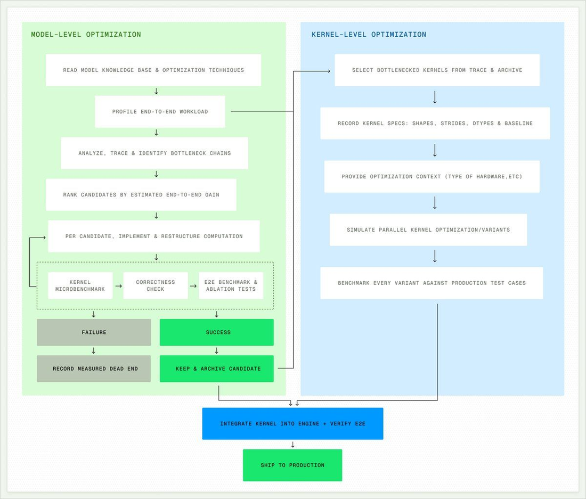
然而「赢得kernel benchmark」和「把优化上线生产」之间有鸿沟。几个原因：
① 最佳kernel配置依赖生产工作负载。在通用benchmark上赢的kernel，在负载上可能输（通用基准的优胜者未必适合你的负载）。
② 更快的microbenchmark不必然产生更快的模型。改动集成后，与其它kernel/内存/调度的交互会让孤立kernel的快慢失真。
③ 单独优化kernel会错过更高层的机会。端到端trace常显示只有一小部分kernel花最多时间；这些时间常被未优化路径或跨kernel交互消耗。
④ 把新kernel集成进生产serving引擎非平凡。不同于改独立torch模型，serving栈有形状/精度/内存约束。
带着这些，我们创建了一个桥接benchmark与生产的方案：给定一个模型和serving栈，它系统性地识别机会、生成kernel、并在生产集成层验证。
双层优化栈：
Model-Level Optimization：理解完整模型工作负载、profile时间花在哪、提出改动（如kernel融合、跨层算子合并、重排计算）。
Per-Kernel Optimization：对生成的性能关键kernel和trace里识别出的kernel，探索多种变体、选择并验证。
第一层帮助把搜索空间扩到「一对一kernel改进」之外：不只优化单个kernel，它在更高抽象层识别机会；第二层则对剩余热点做微优化。
框架有自改进机制：通过正确性和端到端性能检查的kernel被记录进经验库，代表生产已验证的模式。
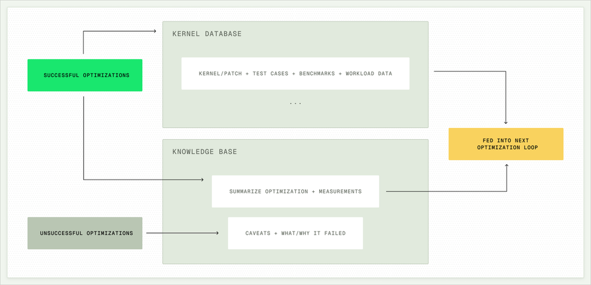
这创造自改进循环：每次优化迭代从积累的经验开始，使框架随处理更多模型越来越强。
初始实验锁定扩散模型：Qwen-Image与FLUX.2，用SGLang服务在B300 GPU上。优化流程对两模型都识别并发起多个优化。
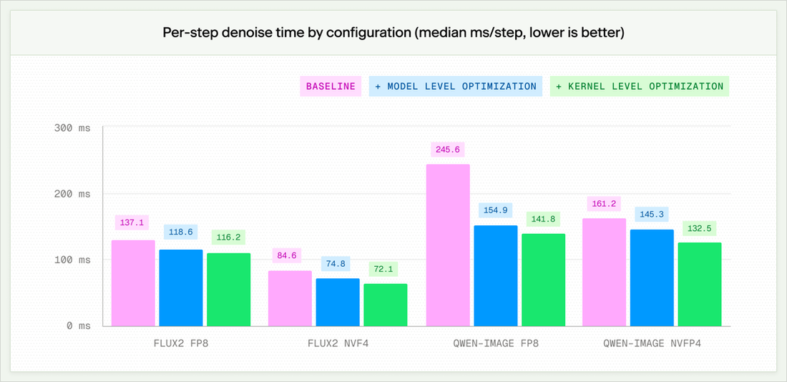
Qwen-Image与FLUX.2的总体改善见图3。
Qwen-Image和FLUX.2的FP8路径在把scale元数据转成DeepGEMM要求的格式时浪费了launches。
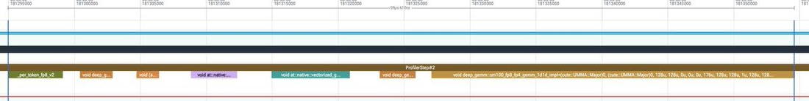
我们消除此开销：把主要FP8激活生产者改成直接发射packed scales，同时把scale转换下推到各kernel。
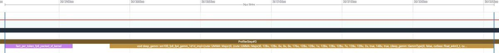
例如FLUX.2的注意力投影（baseline对比optimized，见fig04/05）：
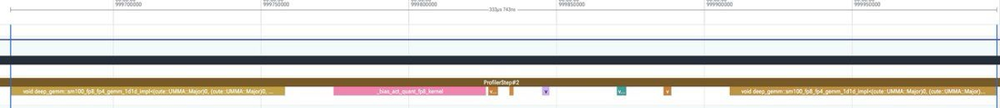
Qwen-Image的前馈层亦同（fig06/07）：
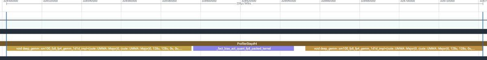
此优化把端到端延迟降低7.3%（Qwen-Image） 和6.1%（FLUX.2），这些收益在正确性和端到端检查后持续。
两模型原始注意力路径独立计算图像query、key、value投影：尽管它们共享同输入、同FP8格式。
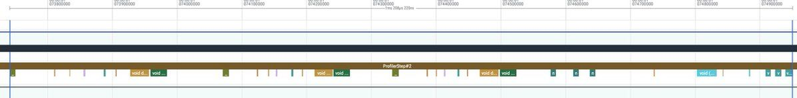
优化把三个FP8投影合并成一个GEMM，然后融合bias addition、QK normalization、RoPE、以及后置epilogue算子。
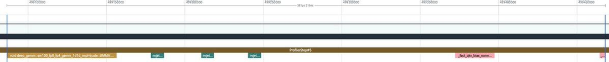
baseline（fig08）对比optimized（fig09）：
两模型里，normalization之前产生大的BF16张量，由随后的quantization kernel立即消费。
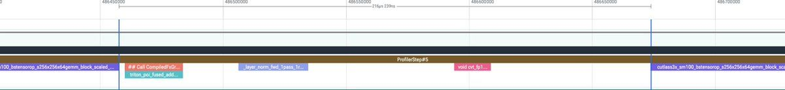
融合后：Qwen-Image融合kernel同时发射原始BF16结果和QKV/前馈的预量化FP8激活；FLUX.2残差路径 融合kernel发射归一化输出、更新的残差、packed E2M1值与swizzled E4M3 scales。
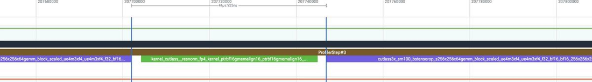
两模型的模型级 + kernel级累加改善（FP8 / NVFP4 latency降低）见下表：
| Model | FP8 latency | NVFP4 latency |
|---|---|---|
| Qwen-Image | 15.8% lower | 1.3% lower |
| FLUX.2 | 1.3% lower | 1.1% lower |
优化 #1 - Bias absorption：上轮优化后，注意力与前馈之后还有两个独立bias addition，把它们吸收进融合kernel的epilogue。
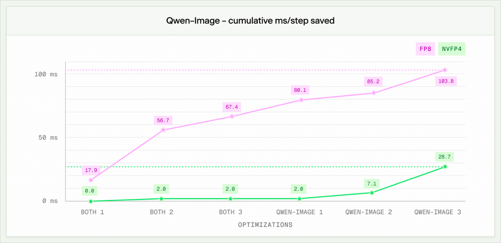
优化 #2 - CFG modulation cache：Classifier-free guidance在同一timestep跑两次去噪pass，两次pass用不同condition（一个收文本、一个空），但共享同一noisy latent和timestep。公式化：
ε_cond = F(x_t,t,c), ε_uncond = F(x_t,t,∅)
ε_CFG = ε_uncond + w( ε_cond − ε_uncond )
noisy latent和timestep被两pass共享。图像和文本modulation分支是
e_t = embed(t)
于是
m_image = W_image·e_t + b_image, m_text = W_text·e_t + b_text
因为这些modulation分支只依赖e_t和固定权重，它们的输出在两次pass间是相同的（无关pass的condition）。所以可在第一次pass缓存、第二次复用，消除整块重复GEMM。
在DiT入口创建cache key（同一timestep对象传给两个CFG branches）：
def_cfg_cache_optimization_enabled(active)->bool:
returnactive
# QwenImageTransformer2DModel.forward
if_cfg_cache_optimization_enabled()andisinstance(timestep,torch.Tensor):
# Both CFG branches receive the same timestep tensor.
# Keep a reference to it so tensor identity can be used safely.
cache_key={
"timestep":timestep,
"version":version_if_available(timestep),
}在每个block缓存image和text modulation输出：
# QwenImageTransformerBlock.forward
cached=getattr(self,"modulation_cache",None)
cache_hit=(
cache_keyisnotNone
andcachedisnotNone
andcached["timestep"]iscache_key["timestep"]
andcached["version"]==cache_key["version"]
)
ifcache_hit:
# Second CFG pass: reuse the cached outputs.
image_modulation=cached["image_modulation"]
text_modulation=cached["text_modulation"]
else:
# First CFG pass: compute the modulation outputs.
image_modulation=image_modulation_GEMM(timestep_embedding)
text_modulation=text_modulation_GEMM(timestep_embedding)
# Cache them for the second CFG pass.
ifcache_keyisnotNone:
self.modulation_cache={
"timestep":cache_key["timestep"],
"version":cache_key["version"],
"image_modulation":image_modulation,
"text_modulation":text_modulation,
}此优化对FP8延迟降低2.1%、对NVFP4降低3.1%。
优化 #3 - Per-kernel optimization：对性能关键的和此前融合的kernel再运行优化pass，产出改进（见fig12）。这些per-kernel优化对FP8改善7.6%、对NVFP4改善13.4%。
优化 #1 - Single-Block QK normalization + RoPE：FLUX.2的单流transformer block没用生产融合的QK-norm+RoPE kernel。新替代是per-token-CTA kernel：载入每个连续12KB Q/K head tile、做归一化、应用RoPE。融合kernel给2× 加速，端到端延迟改善FP8 2.3%。
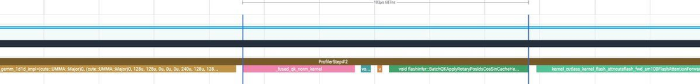
优化 #2 - Fused SwiGLU + FP8/NVFP4 quantization：每次SwiGLU调用之前产生大的BF16中间量、由独立FP8/NVFP4 kernel量化。此优化以单个fused kernel替代多阶段路径（GEMM + 门控 + 激活 + 直接量化为训练格式）。对FP8需保留原始操作顺序保证数值等价；对NVFP4直接发射packed E2M1值和swizzled E4M3 scales。融合kernel把延迟降低2.3%（FP8）和3.8%（NVFP4）。
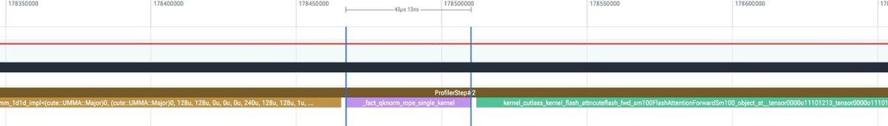
优化 #3 - Gated Residual Normalization：FLUX.2残差路径之前把gated residual update和layer normalization作为两个独立kernel。新kernel把gate乘、残差更新、归一化、scale/shift融进一个。
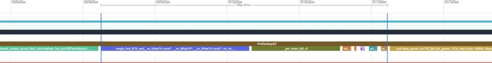
优化 #4 - Per-Kernel Optimization：同Qwen-Image，再跑per-kernel优化循环，识别以下改进：
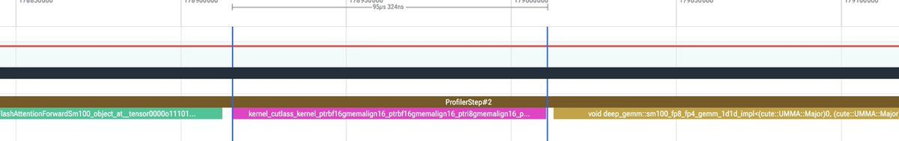
这些kernel合计降低NVFP4延迟2.8%、FP8延迟1.9%。
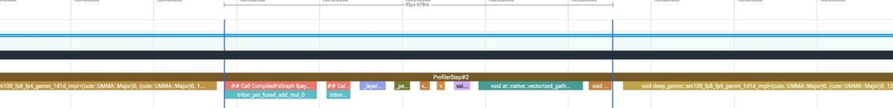
| Original Kernel | What it does | New Kernel |
|---|---|---|
| swiglu_fp4_quant | Fuses SwiGLU with NVFP4 quantization (opt #2) | 1.43× / 1.41× |
| resnorm_quant | Fuses residual normalization + quantization (opt #3) | 1.65× |
| qknorm_rope | Fuses double-block QK norm + RoPE (opt #1) | 2.0× |
| token_cat | Accelerates image-text concatenations (opt #2) | 4.6× |
| norm_out | Fuses boundary norm, scale mult, residual add (opt #3) | 3.35× |
| swiglu | Optimizes remaining unquantized SwiGLU sites (opt #2) | 1.24× |
| gate_res_norm | Optimizes remaining gated residual-norm path (opt #3) | 1.27× |
框架设计成model-agnostic和engine-agnostic，允许同样的优化循环应用到一个模型家族、再迁移到另一个。
随着harness和生产集成继续改进，我们看到一条路径：自动为新的生成模型生成生产级kernel、无缝扩到更广模型/引擎组合。
参考：https://x.com/BrianLi23/status/2093487934448214351